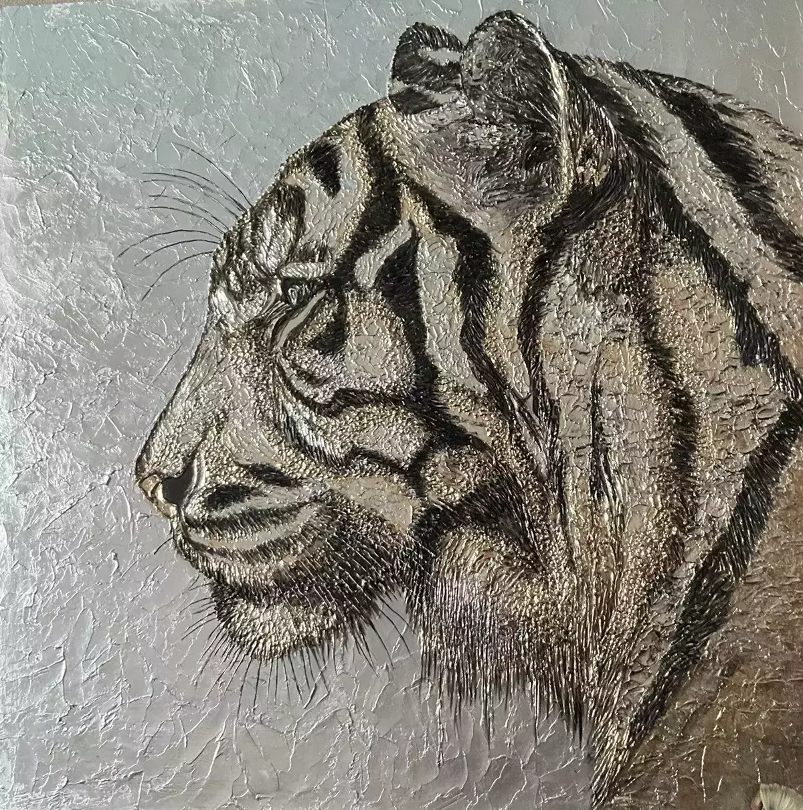

Его взгляд устремлен вперед, выражая непоколебимую уверенность и скрытую силу
80х80 см.
Арт-борд 80х80 см, текстурная паста, акрил, зеркальная поталь, зеркальная крошка, эпоксидная смола, лак. Арт-объект выполнен в современной смешанной технике (Mixed Media), объединяющей живопись и интерьерный барельеф. Картина обладает мощной энергетикой, благородным металлическим сиянием и потрясающей скульптурной глубиной.
Профиль тигра выглядит монументально, спокойно и сосредоточенно. Его взгляд устремлен вперед, выражая непоколебимую уверенность и скрытую силу. Мозаичная текстура и стальной фон вызывают ассоциации с броней или древним щитом, превращая тотемное животное в величественного защитника и стража пространства, в котором висит картина.